Habilitationsvorhaben
Andre Weiner, Professur für Strömungsmechanik
| 01 | Akademischer Werdegang Studium, Promotion, Postdoc, Lehre |
| 02 | Habilitationsprojekt Strömungsregelung durch modellbasiertes bestärkendes Lernen |
Akademischer Werdegang
Studium, Promotion, Postdoc, Lehre
2008 - 2014
- TU Dresden, Angewandte Mechanik
- 2012/2013 Universidad de Salamanca
- Spezialisierung auf Strömungsmechanik
Diplom: Konzept zur Ermittlung optimaler Wärmeübertrager für Hochleistungswärmerohre zur Außenluftaufbereitung; Institut für Luft- und Kältetechnik gGmbH
2014 - 2020
- TU Darmstadt, Math. Modellierung & Analysis
- Modellierung chem. Grenzschichten
- Datenbasierte Subgridskalenmodelle
Promotion: Modelling and simulation of convection-dominated species transfer at rising bubbles; betreut von Prof. Dieter Bothe
2020 - 2023
- TU Braunschweig, Strömungsmechanik
- Untersuchung transonischer Buffets
- Entwicklung modaler Analyseverfahren
flowTorch - a Python library for analysis and reduced-order modelling of fluid flows; github.com/AndreWeiner/flowtorch
seit 2023
- TU Dresden, Strömungsmechanik
- ML in der Strömungsmechanik
- ML-CFD-Kopplung, Bayes'sche Opt.
Lehre
- ML in Fluid Mechanics, 5 x 5CP
- Turbulence Modelling, 1 x 5CP
- Comput. Fluid Dynamics, 2 x 5CP
insgesamt 40CP (einschl. WS25/26)
github.com/AndreWeiner/ml-cfd-lectureSonstiges
- OpenFOAM-ML Hackathon (seit 2022)
- flowTorch Workshops (seit 2022)
- OpenFOAM Journal Advisory Board
- Open-Source Advocate
- Reproduzierbare Wissenschaft
Habilitationsprojekt
Strömungsregelung durch modellbasiertes bestärkendes Lernen
Bestärkendes Lernen: fortlaufende Entscheidungsfindung unter Unsicherheit
 



Benchmark, $Re=100$
Optimales Regelgesetz
Rechenbeispiel DrivAer Modell
- $5$ Stunden/Sim. (1000 MPI Ranks)
- $10$ parallele Simulationen
- $100$ Iter. $\rightarrow 20$ Tage Rechenzeit
- $20\times 24\times 10\times 1000 \approx 5\times 10^6 $ CPUh
- $0.01-0.05$ EUR/CPUh $\rightarrow 0.5-2$ mEUR
CFD Simulationen sind teuer!
Normalisierte Trainingszeit für modellbasiertes Lernen
Zeitplan
- kummulative Anfertigung
- 3/5 Publikationen vollständig
- Fertigstellung bis Ende 2026